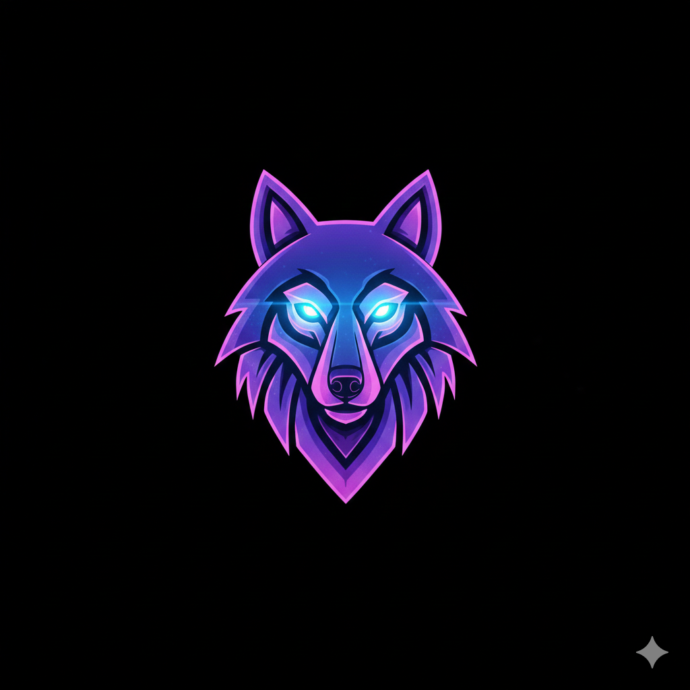

O PC agora
Consola de ambiente de trabalho para OpenRGB. A janela é o produto — não um site a controlar o PC a partir do telemóvel.

Nightwolf RGB GitHub
Consola de ambiente de trabalho para OpenRGB. A janela é o produto — não um site a controlar o PC a partir do telemóvel.
Arranque
No Windows, na raiz do repositório. O OpenRGB vai no bundle; o backend sobe com a app.
npm install
npm run desktop


iCUE, Armoury Crate, Synapse e afins disputam o mesmo hardware. A vista Limpeza lista 63 processos Windows conhecidos e pode matá-los — só no Windows, só quando o operador pede.
Controle vive uma vez, na titlebar. SDK é lâmpada de ligação, não accent. O rodapé lê devices, selecção e se o controlo está off.
Capturas de 8 set 2026, no app a correr no Windows, 1 device: B550M GAMING X WIFI6.